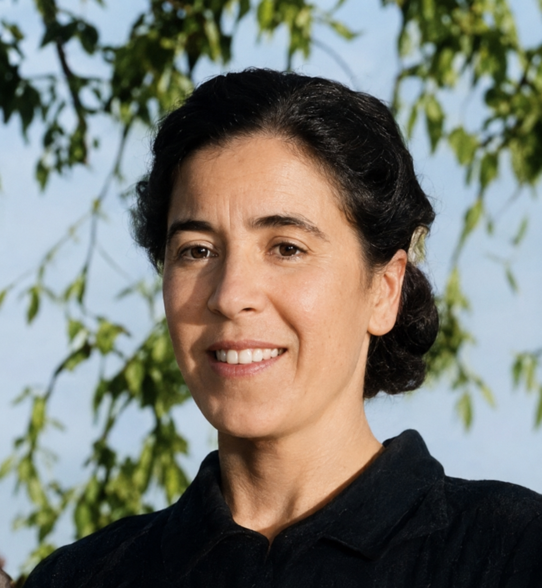

Viajes de los Inmigrantes:
Las historias de mi familia
Explora las raíces de las dos ramas de nuestra historia familiar.
Explora las raíces de las dos ramas de nuestra historia familiar.
Archivo histórico de la familia Scappini Bernuzzi.
Un homenaje a quienes cruzaron el océano.
Registro de Matrimonio de Vincenzo Giuseppe Scappini y Elizabetta Bernuzzi en Scandolara Ravara, Italia (1875).


Nacimiento: 25 de enero de 1842 · San Martino del Lago, Italia
Fallecimiento: 19 de abril de 1915 · Caazapá, Paraguay
Padres: Giovanni Scappini y Teresa Ferrari
Nacimiento: 5 de marzo de 1853 · Scandolara Ravara, Italia
Fallecimiento: 1923 · Paraguay
Padres: (información en recopilación)
Nuestra historia comienza con Vincenzo Giuseppe Scappini Ferrari, hijo de Giovanni Scappini y Teresa Ferrari. Nació el 25 de enero de 1842 en San Martino del Lago, Cremona, Lombardía, Italia. Se casó el 25 de enero de 1875 (el día de su cumpleaños número 33) con Elizabetta Bernuzzi Bottini (nacida el 5 de marzo de 1853), en la localidad de Castelponzone (actualmente en el municipio de Scandolara Ravara).
Huyendo de la gran hambruna que azotaba Europa, el matrimonio, junto a parientes y vecinos, abordó las grandes barcazas enviadas por el Imperio Brasileño. Desembarcaron en Río Grande do Sul (Brasil). Fue allí donde sus apellidos fueron registrados tal como los oía el oficial. Por descontento con las condiciones, muchos italianos se desplazaron hacia distintos territorios. Siguiendo las vías del tren, se establecieron finalmente en Yegros, Paraguay.
Vincenzo falleció el 19 de abril de 1915 en Caazapá, Paraguay, a la edad de 73 años. De su matrimonio con Elizabetta nacieron al menos 5 hijos varones y 3 hijas mujeres, dando origen a la rama del apellido Scappini en el país.
Nota para trámites oficiales: Para solicitar el acta de nacimiento (bautismo) de Vincenzo, se debe contactar a la Diócesis de Cremona o a la parroquia de San Martino del Lago. Para el acta de matrimonio, solicitarla al Comune de Scandolara Ravara.
Vincenzo y Elizabetta tuvieron 8 hijos vivos. El único que nació en Italia fue el mayor, Pablo.
Scappini González
Cortessi Scappini
Scappini Valdez
Rienzzi Scappini
Scappini Scurra & Larrosa
Scappini Sarubbi
Scappini Rodríguez
Núñez Scappini
La representación visual del legado de la familia Scappini Bernuzzi.

Un homenaje a nuestras raíces catalanas y paraguayas.
Certificado de Matrimonio de Juan Cristóful Ricart y Teresa Solé y Almenara (1925).


Esta rama de la familia tiene sus raíces en el matrimonio de Vicente Solé Cases (natural de Bellvís, Lérida) y Josefa Almenara i Molló. De su unión nacieron 3 hijos: Teresa Solé y Almenara (la hermana mayor), Francisco Solé y Almenara y Ramona Solé y Almenara.
En un viaje documentado, el 20 de julio de 1922, Vicente Solé Cases compareció ante el juzgado de Bellvís para obtener el permiso necesario para que sus hijos mayores, Teresa (de 20 años) y Francisco (de 19 años), pudieran trasladarse a Sudamérica. Teresa, la hermana mayor, y Francisco se radicaron en Paraguay, mientras que Ramona residió en Bellvís.
El padre Vicente Solé era un viajero incansable. Testimonios documentan sus travesías en el vapor "Santa Isabel de Borbón", viajando de ida y vuelta entre España y Paraguay para visitar a sus hijos.
Primera hija (hermana mayor)
Segundo hijo
Tercera hija
La representación visual del legado de la familia Solé Almenara.


Nacimiento: 1879 (Italia) | Fallecimiento: 1962
Cónyuge: Escolástica González
Hijos (12): Información aún en recopilación. Una de sus hijas fue Irvina Scappini González (la hija menor).
1879 - 1962 · Casado con Escolástica González

Hija menor de Pablo y Escolástica

1939 - 2019 · Casado con Amalia Vateone


Nacimiento: Nació en el barco rumbo a América, registrado en Garibaldi, Brasil.
Cónyuge: Anselma Valdez
Historia: Se estableció en Yegros, Paraguay. Falleció en 1970 a los 89 años.


Casado con Inez Ortega. 5 hijos.

Cónyuge: Alfonso Rienzzi Grande · 5 hijos

1887 · 1er cónyuge: Justina Scurra (6 hijos) · 2do: Albertina Larrosa (10 hijos)

1889 - 1938 · Cónyuge: Teresa Sarubbi Spaltra · 7 hijos

Telegrafista, Veterano del Chaco · Casado con Ana Matilde Baez · 5 hijos

Casada con Astolfo Dávalos · 3 hijas

Cónyuge: Ernesta Rodríguez Sosa · 9 hijos

Cónyuge: Basilicio Núñez · 1 hijo (Alicio)

Nacida el 18/07/1902 en Bellvís · Hija de Josefa Almenara Molló
Casada con Juan Cristóful Ricart (25/04/1891, Gironella) el 14/03/1925 en Asunción
5 hijos: Josefa, Mercedes, María, Juanita, Jaime.

1926 - 2004 · Casada con Ignacio Antonio Cano

1928 - 2017 · Casada con Sebastián Galeano, sin hijos

1931 - 2012 · Soltera sin hijos

1934 - 2015 · Soltera sin hijos

1936 - 2020 · Casado con Daily Scappini Baez (1965) · 3 hijos

Segundo hijo de Vicente Solé y Josefa Almenara
Apicultor, dueño de "El Colmenar" en Lambaré
1er matrimonio: (viudo) · 2do: Josefa Falcón


Hija de Vicente Solé Cases y Josefa Almenara Molló
Casada con Baldomero Camarasa
Hija: Paquita Solé Camarasa · Mamá adoptiva: Francisca
Hija de Vicente Solé Cases

Nac. 29/11/1945 · Casada con Pepe Callizo